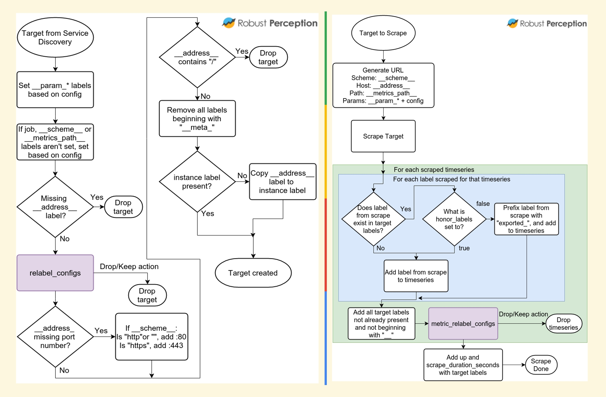
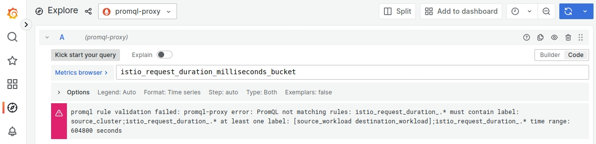

KubeCon 2023 北美：可观测日小记
前言
CNCF 主办的 Observability Day 在 11 月 6 日与北美 KubeCon + CloudNativeCon 同期举行。作为可观测性领域的新人，虽然因为时间关系没能到现场参加，但是主办方在活动当天就上传了录像，堪称神速，所以有机会第一时间回看了这些分享，并且记录了少许工作相关的内容。
Session 小记
Dynamic Sampling in Practice - Honeycomb
关于分布式追踪的采样方案，我在过往的 博客 中已经简单介绍过了。Honeycomb 是一家可观测性方向的服务提供商，因此他们产品的视角也是可观测性平台的视角。Kent Quirk 在这场分享中提出的问题是：
What if your data isn’t predictable?
试想一下，如果我是公司内可观测性平台的维护者，有数千个服务接入了我的平台。如果我为他们统一配置规则，例如“采样所有耗时 > 5 秒的 Trace”，那么：
- 对于高性能、低延迟的服务，如网关，一次 Trace 如果超过 5 秒，系统可能早就崩溃了；
- 对于离线服务，如大规模的计算作业，基本上所有 Trace 都超过 5 秒，采样上来的数据太多，把握不住重点。
这个问题的关键点就是：维护者并不能知道所有服务的特点，也无法编写统一的规则。正如分享中提到：
数据不可控带来的影响包括：
- 系统过于复杂，难以编写统一规则；
- 为了更好地采集数据，系统需要经常变更以满足新的数据形态、规律；
- 采集上会遇到有突增流量、突增上报量；
- 管理采样的人并不是管理数据、流量产生的人。
因此，Kent Quirk 提出 Dynamic Sampling，下放决策权给应用服务。在 Honeycomb 上，维护者可以配置一些字段，应用服务按照实际情况填写，这些字段在采集上来之后组合成一个 Key，例如：
- http_code / sql_count / cache_count
在正常处理流程中，这些 Key 对应的 Value 分布都是相对集中的，例如收集 10000 个 Trace 可能得到的结果：
- 出现了 9700 次：http_code: 200 / sql_count: 0 / cache_count: 10
- 出现了 293 次：http_code: 200 / sql_count: 10 / cache_count: 10
- 出现了 7 次：http_code: 200 / sql_count: 5 / cache_count: 5
依照不同 “组合” 的出现总次数，可以对其赋予不同的采集概率，例如出现次数最多的组合后续继续出现的话，仅采样 0.1%；第二多的组合则采样 10%，而出现次数最少的组合采样 100%，以此体现 Dynamic。
Dynamic Sampling 是发生在尾部采样阶段的，它的理念，或者说与传统尾部采样策略的差异在于：传统策略依照错误、耗时、数量等等因素决定，其决定权本质上是控制在 Collector 的；而 Dynamic Sampling 在 Collector 侧配置的是字段名，这些字段应用服务需要按实际情况，也就是下放了决策权给应用。当然，读者也可以认为它是尾部采样中的 string_attribute 的小变种，很多时候维护者也使用了 Attribute 中的内容来决定是否采样，只是这些逻辑并不为应用服务所知，现在只是让大家知道和填写而已。
有趣的是，2023 年初曾经有一个 issue 提出了几乎相同的想法：#17874 New Component proposal: DeDuplicator processor / sampler，只是当时原作者没有带来后续的实现。
Monitoring and Metadata - Google
这场分享的小标题是：Exploring approaches to attaching metadata to logs, metrics and traces。刚好最近也在和 Metrics 打交道，所以想看看能不能从中学到一些。
可观测性三大支柱中的 Metadata，即 Label，生成姿势都是较为接近的，所以小记中以 Metric 为例。
在应用服务视角，它们上报一个的 Metric 举例如下：
http_requests_total{host="jiekun.dev", path="/posts/kubecon-na-2023", method="GET", status="200"}
在过去，我们可能会认为这里面的 Label 不多，其中 host、method、status 是比较固定的，而 path 可能会存在高基数问题。这个指标产生的时间线，也就是不同 Label 的组合数量，可能是：
- 1 个
hostx 1000 个pathx 2 个methodx 5 个status= 10000
看起来尚可接受对吗？
在 Prometheus 服务端，这个 Metric 的真实样子可能是：
http_requests_total{az="us-central-1a", service="blog", pod="blog-a3xdw", env="prod", host="jiekun.dev", path="/posts/kubecon-na-2023", method="GET", status="200"}
好吧，Metric 里还包含了许多基础设施相关的 Label，那似乎实际的时间线数量会是：
- 10000 x 2 个
azx 1 个servicex 3 个pod= 60000
放大了 6 倍，似乎也还是可以接受，但是请不要忘记这只是个博文例子，在实际使用中，我们观察到的放大比例会非常高。
下面的流程图更详细地展示了一个指标的不同 Label 是在哪里得到的。简单来说，在配置 Prometheus 的抓取后，Prometheus 需要通过服务发现找到需要抓取的 Service 或者 Pod，这个过程中就会得到第一部分的 Label，例如 cluster、service、pod 等等；而在实际抓取时，访问应用服务提供的接口可以获取到它暴露的 Metrics 和 Labels，并合并两部分内容。

谈到这里，可以引出本小节的第一个结论：由于基础设施 Label 会进一步放大时间线数量，应用服务在提供 Metrics 的时候对高基数问题的估量应该更保守一些，毕竟谁也不想在查询时动不动就聚合几百万条时间线，既可能压垮 Prometheus，也让查询等待时间变长，体验变差。
但是毕竟 Metrics 和 Label 还是由应用服务提供，可以认为是不可控的，平台方可以如何去管控呢？对于查询，一个简单有效的方法是：增加代理层，解析和校验 PromQL。
我们团队在上周实现了这个事情，上线了 PromQL Proxy 应用，置于 Grafana 和 Thanos Query Frontend 之间，按照规则来拦截查询：
- 特定 Metric 如果缺少特定 Label 则不放行；
- 特定 Metric 查询时间区间超过阈值则不放行。
一个示例的配置如下：
promql-proxy:
- metric-name: istio_request_duration_milliseconds_*
and_labels: [cluster]
or_labels: [source_workload, destination_workload]
time_range: 7d
...
它要求用户在涉及形如 istio_request_duration_milliseconds_* 的指标查询时：
- 必须携带
clusterlabel 筛选； - 至少携带
source_workload或destination_workloadlabel 筛选； - 查询时间区间长度不能超过 7 天；
- …

静态配置只能用于事故后补救、拦截，阻止同样问题再次发生。那要防范于未然，我们计划将其与指标维度监测打通，在指标采集过程中也会感知高基数问题，并且动态地加入 PromQL Proxy 的拦截范围。
Project Updates
Video | Slides
这个 Session 其实挺有趣而且介绍了很多新功能，但是考虑到信息集中对于当下缺少时间的人们非常重要，TL;DR：
- Prometheus：
- Prometheus Native Histrogram 是个值得关注的功能，今年的 3 次 KubeCon + CloudNativeCon 都出现了它的身影，它旨在提供相比传统固定分桶 Histrogram 更高精度、更动态的 Histrogram 实现，版本高于 v2.40 可以体验；
- 把 Prometheus 升级到 v2.44 以上，内存减半；
scrape_config_files告别把超长的配置写在同一个配置文件中；- Prometheus OTLP receiver 现在对接收 OTLP metrics 提供实验性支持；
- Prometheus 3.0 正在路上；
- OpenTelemetry：
- Logging 模块到达 GA；
- OTLP 到达 1.0 版本，意味着它将变得更稳定、变更会更少，这对协议来说是非常重要的事情；
- Fluentd & Fluent Bit：受限于对日志领域了解，没办法对具体内容逐一分享，感兴趣的读者可以翻阅录像。但是整体听下来的感受就是，它们也在像 OpenTelemetry 一样打造工具，例如 Processor、Pipeline 的设计结构如出一辙。或许这也是高度模块化、插件化的项目中比较值得推广的实践。
总结
除了上面提到的 Session，可观测性领域在 2023 年其实还有很多代表性的亮点，特别是 eBPF。本次 KubeCon + CloudNativeCon Observability Day 稍微缺少了相关的内容，或许是因为演讲者都投稿到隔壁 CiliumCon 去了。
另外，也看到很多 Session 都在着重讲解成本问题，例如 FinOps、Prometheus 在过去一年怎样把内存减半等等。或许这也会是明年的一个工作方向，帮公司节约更多成本，或者在相近的成本下保持数据增长及组件健康 —— 就从 PromQL Proxy 开始吧。